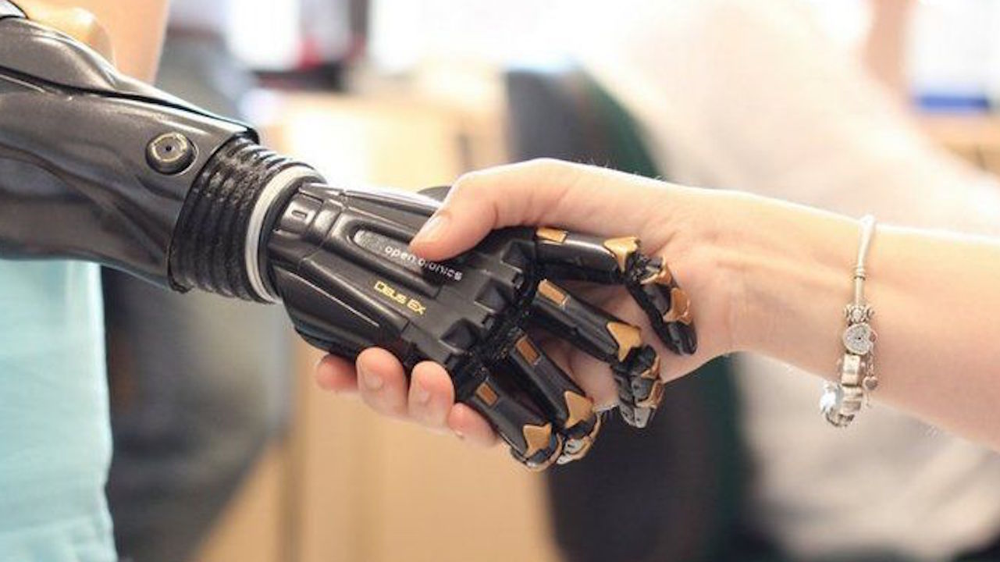

Viaje agora!
Uma Visão de Tecnologia

O traje possui um sistema operacional interno de computador de bordo com inteligência artificial instalada que auxilia no fornecimento de estratégias, informações básicas sobre os oponentes, orientação interna, status do traje e outros programas altamente avançados.
A armadura é alimentada por uma combinação de conversores solares, baterias elétricas e um gerador de bordo que usa absorção de partículas beta como fonte de combustível e um reator de arco em miniatura capaz de gerar 8 GJ/s.
Equipado com um poderoso holofote, capaz de projetar feixes em praticamente todos os espectros de luz, Smart Missiles, descargas de plasma extremamente poderosas que se propagam com força à distância.
A cota de malha de escala microscópica de Suit é rígida por vários geradores de feixe magnético controlados por computador. Esses geradores podem sentir e amplificar os movimentos e a força do usuário do traje e são capazes de liberar o campo de força eletromagnética
Toda a armadura também gera campo de força antigravitacional, turbina nas botas e mochila fornecem impulso. Cada bota é equipada com um pequeno tanque de armazenamento criogênico contendo ar líquido que é capaz de abastecer as mini-turbinas em ambientes não atmosféricos.
Ontem, o ano em que nasceu a pessoa mais velha do mundo. Todas as tecnologias que estamos experimentando atualmente eram meramente ilusórias, ou talvez percebidas como uma ideia maluca ou apenas um milagre dos céus. Quem teria pensado que hoje, partes do corpo podem ser substituídas ou suportadas por tecnologia artificial, e que a internet pode conectar pessoas de diferentes lados do mundo em tempo real. Algumas dessas tecnologias foram exibidas inúmeras vezes nos cinemas antes de se tornarem realidade. Os filmes da Marvel me apresentaram as maravilhas da tecnologia, eles me inspiram a ser significativo nessa arena.
Elon Musk e outras grandes empresas agora podem ser consideradas outra indústria gritante. Com projetos como o SpaceX, neurallink, computação quântica, poderemos explorar áreas desconhecidas da galáxia e levar a tecnologia a maiores alturas. Isso me fez perceber as ideias inimagináveis, ninguém saberá que talvez na próxima década a lua esteja a apenas 10 horas de viagem da Terra, e fotos de selfie na cratera da lua são apenas uma imagem comum nas redes sociais.
O projeto da tecnologia é um caminho complicado para decifrar. Aqueles que inicialmente pensávamos que eram impossíveis agora são fatos, e alguns são, na verdade, parte de nossas vidas diárias, como WiFi, internet, telefones inteligentes, A.Is etc. Há uma pequena chance de que apenas poucas pessoas (ou talvez nenhuma) que não não conhece ou experimentou as maravilhas da tecnologia.
Minha opinião sobre isso é que precisamos desafiar continuamente as normas e o que parece normal e funcionando. Se as coisas estão bem, então, não termina aí. Estamos avançando e apenas aqueles que não se prepararem ficarão para trás, ou o pior ficará para trás.
Só porque algo funciona, não significa que não possa ser melhorado.